介绍新的 GitLab 分支源插件
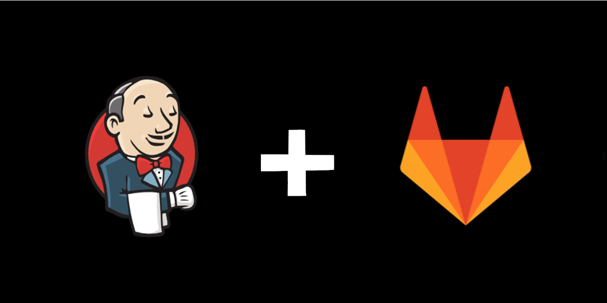
GitLab 分支源插件已经走出 beta 阶段，并已发布到 Jenkins 更新中心。
它允许您基于 GitLab 用户 或 组 或 子组 项目创建任务。
您可以:
- 从 GitLab 用户/组/子组导入单个项目的分支作为任务（多分支流水线任务）
- 从 GitLab 用户/组/子组导入所有或部分项目的分支作为任务（GitLab 组任务或 GitLab 文件夹组织）
GitLab 组项目对项目进行扫描， 根据设置的规则导入流水线任务。
导入项目之后， Jenkins 立即基于 Jenkinsfile 流水线脚本运行任务并且将状态通知到 GitLab 流水线状态。
这个插件与其他分支源插件不同，它提供了 GitLab 服务器配置，可以在系统配置中配置。
Jenkins 配置即代码 (JCasC) 也可以用于配置服务器。
要想了解更多关于服务器配置的信息，请参考我之前的博客。
要求
Jenkins - 2.176.2 (LTS)
GitLab - v11.0+
创建任务
要创建多分支流水线任务（使用 GitLab 分支源）或 GitLab 组任务，您必须将 GitLab 个人访问令牌添加到服务端配置。
凭据用于获取项目的元数据，并在 GitLab 服务器上设置 hook。
如果令牌具有管理访问权限，您还可以设置 系统 Hook，而 Web Hook 可以从任何用户令牌设置。
创建多分支流水线任务
转到 Jenkins > 新建任务 > 多分支流水线 > 添加源 > GitLab 项目
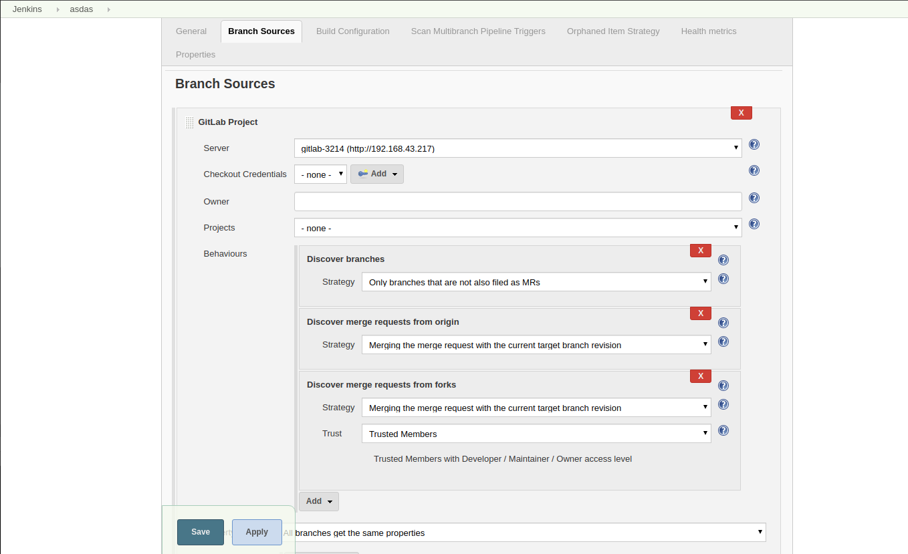
Server- 从下拉菜单中选择所需的 GitLab 服务器，需要在创建此任务之前进行配置。Checkout Credentials- 如果插件要构建任何私有项目，添加SSHPrivateKey或用户名/密码类型的凭据。如果所有的项目都是公开的则不需要检出凭据。检出凭据与 GitLab 服务器配置中的凭据(GitLab 个人访问令牌类型)不同。Owner- 可以是用户、组或子组。 根据这一点填充Projects字段。Projects- 从下拉菜单中选择要构建的项目。Behaviours- 这些特性是非常强大的工具，用于配置构建逻辑和构建后逻辑。我们定义了新的特性。您可以在仓库文档中看到所有信息。
保存并等待分支索引。您可以从这里自由导航，任务进度显示在左侧。
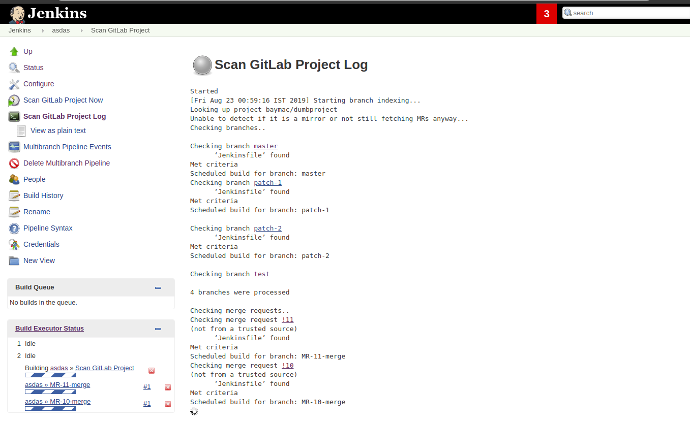
索引完成后，导入的项目将所有分支、合并请求和标签列示为任务。

查看每个任务，您会发现左侧有一些操作项:
- 您可以通过选择
立即构建手动触发任务。 - 您可以通过选择相应的按钮访问 GitLab 服务器上的特定分支/合并请求/标签。
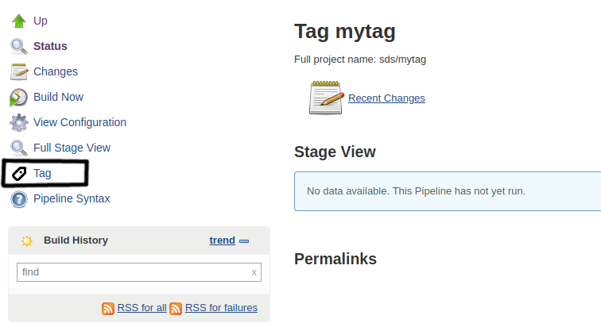
创建 GitLab 组类型任务
转到 Jenkins > 新建任务 > GitLab Group
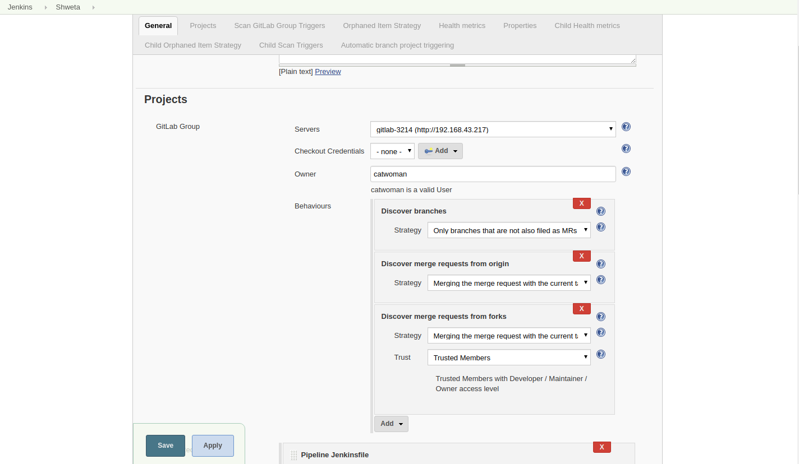
您可以注意到，配置非常类似于多分支流水线任务，只是缺少 Projects 字段。
您可以添加在您的 Owner（用户/组/子组）中所有项目。
表单验证将与 GitLab 服务器检查 owner 是否有效。
您可以添加 Discover subgroup project 的特性，该特性允许您发现组或子组中所有子组的子项目，但此特性不适用于用户。
在索引时，web hook 在每个项目中创建。
GitLab Api 不支持创建组 web hook，所以这个插件不支持只有 GitLab EE 才支持的特性。
现在可以查看导入的项目，如果需要，可以在每个文件夹上配置不同的设置。
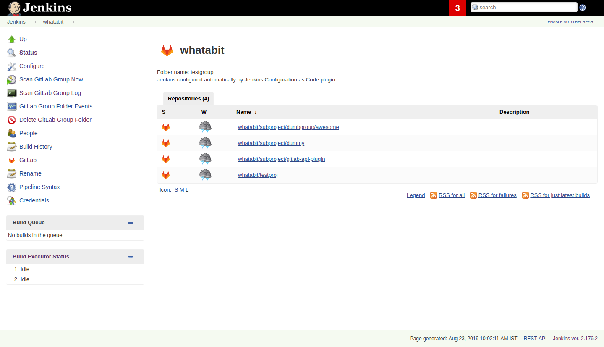
GitLab 流水线状态通知
GitLab 从任务排队的角度得到关于构建状态的通知。
- 成功 - 任务成功了
- 失败 - 任务失败了并且合并请求还没准备好合并
- 出错 - 发生了意外；例如：Jenkins 任务被终止了
- 等待 - 任务正在构建队列中等待
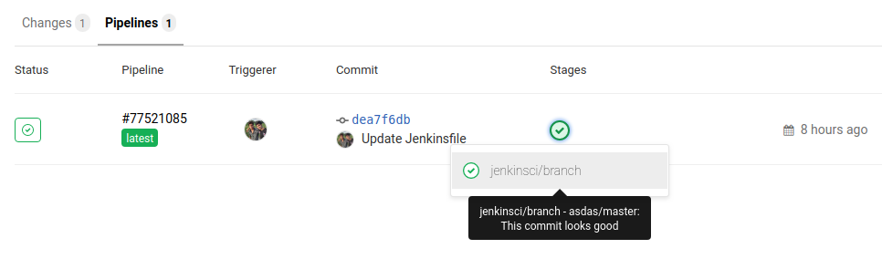
关于 GitLab 流水线状态，有指向相应 Jenkins 任务构建的超链接。 要查看流水线阶段和控制台输出，需要访问 Jenkins 服务器。 我们也计划通知管道阶段到 GitLab，但它有一些缺点，目前这已得到解决，有未来的计划添加它作为特性。
您还可以通过从特性列表中选择 Skip pipeline status notifications 来跳过关于流水线状态的 GitLab 通知。
合并请求
实现对项目合并请求的支持具有挑战性。
第一，MR 有两种类型，即原始分支和 Fork 的项目分支，因此每个 head 必须有不同的实现。
第二，来自 fork 的 MR 可能来自不可信的源，所以实现了一种新的策略 Trust Members，它允许 CI 仅从具有 Developer/Maintainer/Owner 访问级别的可信用户构建 MR。
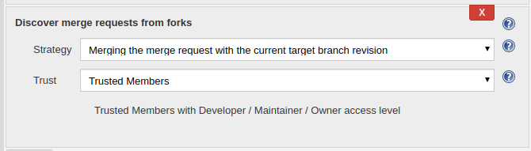
第三，来自 fork 的 MR 由于 GitLab 的问题不支持流水线状态通知，请参考这里。
您可以添加一个特性 Log Build Status as Comment on GitLab ，它允许那您添加一个 sudo 用户（如果你希望 owner 用户为空）以在 commit/tag/mr 上对构建结果进行评论。
要添加 sudo 用户，令牌必须具有管理访问权限。
默认情况下，只有失败/出错以评论的形式被记录，但是您也可以通过勾选复选框来启用成功构建的日志记录。
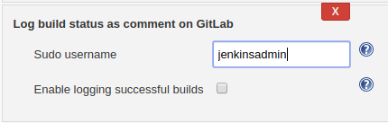
有时候，合并请求因为外部错误而失败，因此因此您希望通过评论 jenkins rebuild 来触发 mr 的重新构建。
要启用该触发器，添加特性 Trigger build on merge request comment。
评论内容可以在特性中修改。
出于安全原因，评论者需要有该项目的 Developer/Maintainer/Owner 访问权限。
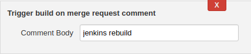
Hook
如果在服务器配置中配置了 web hook，则在项目上自动创建 web hook。
请确保 web hook 通过 CSRF 过滤器。
Jenkins 监听 /gitlab-webhook/post 路径上的 web hook 。
GitLab 上 web hook 在以下事件上被触发：
Push Event- 当提交或分支被推送时Tag Event- 当新标签被创建时Merge Request Event- 当合并请求被创建/更新Note Event- 当对合并请求进行评论时
如果令牌具有管理访问权限，还可以在 GitLab 服务器上设置系统 Hook。
在创建新项目时触发系统 hook，Jenkins 根据配置触发新项目的重新扫描，并在其上设置 web hook。
Jenkins 监听 /gitlab-systemhook/post 路径上你的系统 hook。
GitLab 上系统 hook 在 Repository Update Events 上被触发：
你也可以使用 Override Hook Management mode 特性来覆盖默认你的 hook 管理以及选择是否要使用不同的上下文（比如 Item）或完全禁用它。
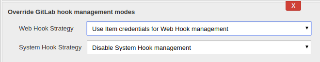
Job DSL 以及 JCasC
你可以使用 Job DSL 来创建任务。
下面有一个 Job DSL 脚本的示例：
organizationFolder('GitLab Organization Folder') {
description("GitLab org folder created with Job DSL")
displayName('My Project')
// "Projects"
organizations {
gitLabSCMNavigator {
projectOwner("baymac")
credentialsId("i<3GitLab")
serverName("gitlab-3214")
// "Traits" ("Behaviours" in the GUI) that are "declarative-compatible"
traits {
subGroupProjectDiscoveryTrait() // discover projects inside subgroups
gitLabBranchDiscovery {
strategyId(3) // discover all branches
}
originMergeRequestDiscoveryTrait {
strategyId(1) // discover MRs and merge them with target branch
}
gitLabTagDiscovery() // discover tags
}
}
}
// "Traits" ("Behaviours" in the GUI) that are NOT "declarative-compatible"
// For some 'traits, we need to configure this stuff by hand until JobDSL handles it
// https://issues.jenkins.io/browse/JENKINS-45504
configure {
def traits = it / navigators / 'io.jenkins.plugins.gitlabbranchsource.GitLabSCMNavigator' / traits
traits << 'io.jenkins.plugins.gitlabbranchsource.ForkMergeRequestDiscoveryTrait' {
strategyId(2)
trust(class: 'io.jenkins.plugins.gitlabbranchsource.ForkMergeRequestDiscoveryTrait$TrustPermission')
}
}
// "Project Recognizers"
projectFactories {
workflowMultiBranchProjectFactory {
scriptPath 'Jenkinsfile'
}
}
// "Orphaned Item Strategy"
orphanedItemStrategy {
discardOldItems {
daysToKeep(10)
numToKeep(5)
}
}
// "Scan Organization Folder Triggers" : 1 day
// We need to configure this stuff by hand because JobDSL only allow 'periodic(int min)' for now
triggers {
periodicFolderTrigger {
interval('1d')
}
}
}
你也可以使用 JCasC 从 Job DSL 脚本直接创建任务。示例请查看该插件仓库。
如何与我们讨论 bug 或新特性?
这个项目使用 Jenkins JIRA 来跟踪问题。 你可以查看
gitlab-branch-source-plugin组件下面的问题。在开发者邮件列表中发送你的邮件。
加入我们的 Gitter channel。
未来的工作
- 积极维护
GitLab 分支源插件并从用户那里获取反馈以改进插件的用户体验。 - 扩展在 BlueOcean 中对 GitLab 流水线的支持。
资源
感谢 Jenkins 以及 Google 编程夏令营 :)